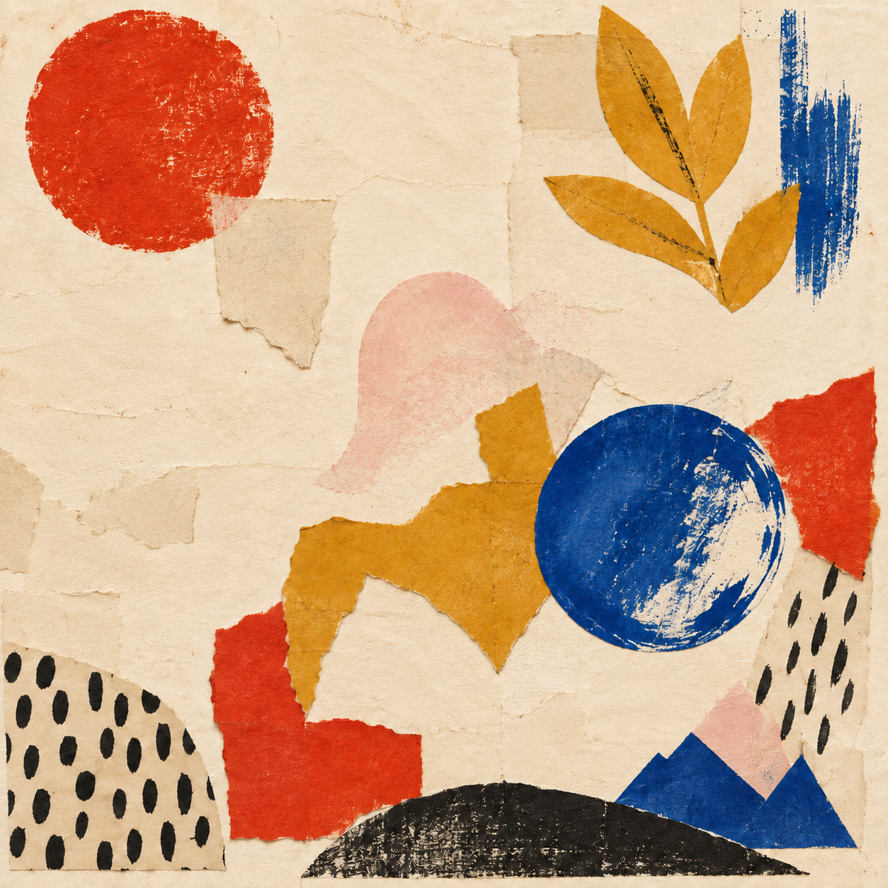
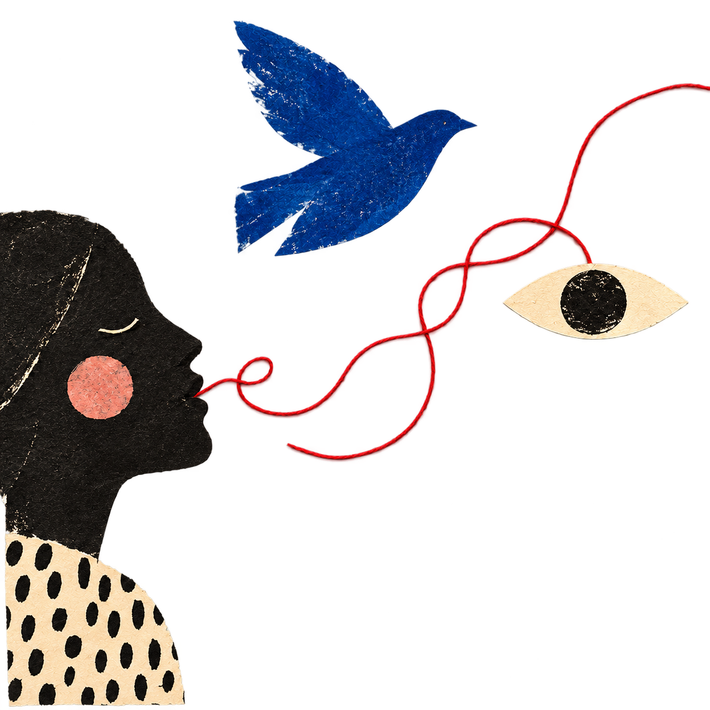
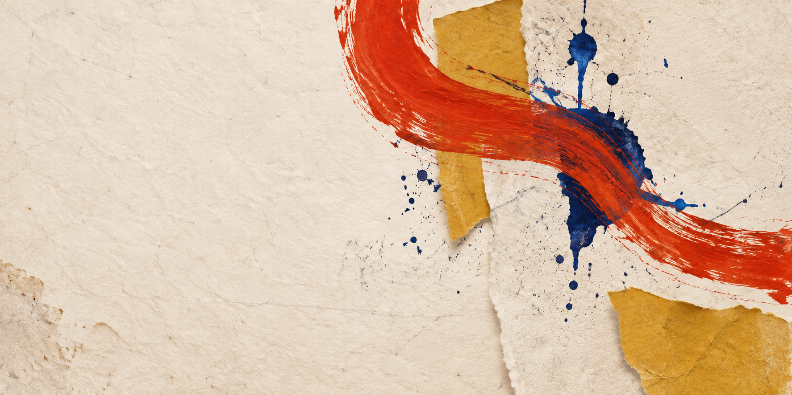
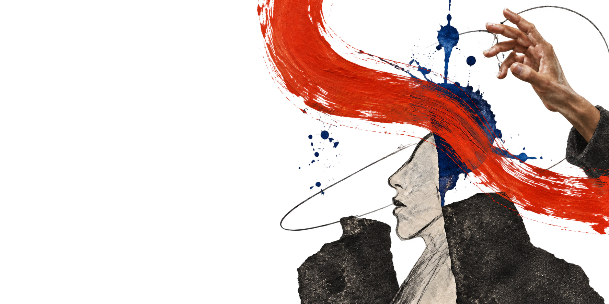
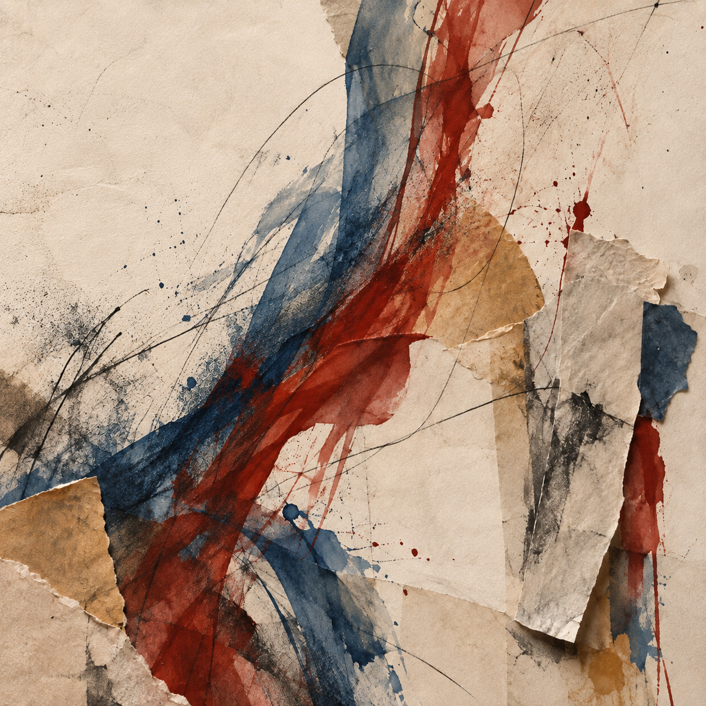
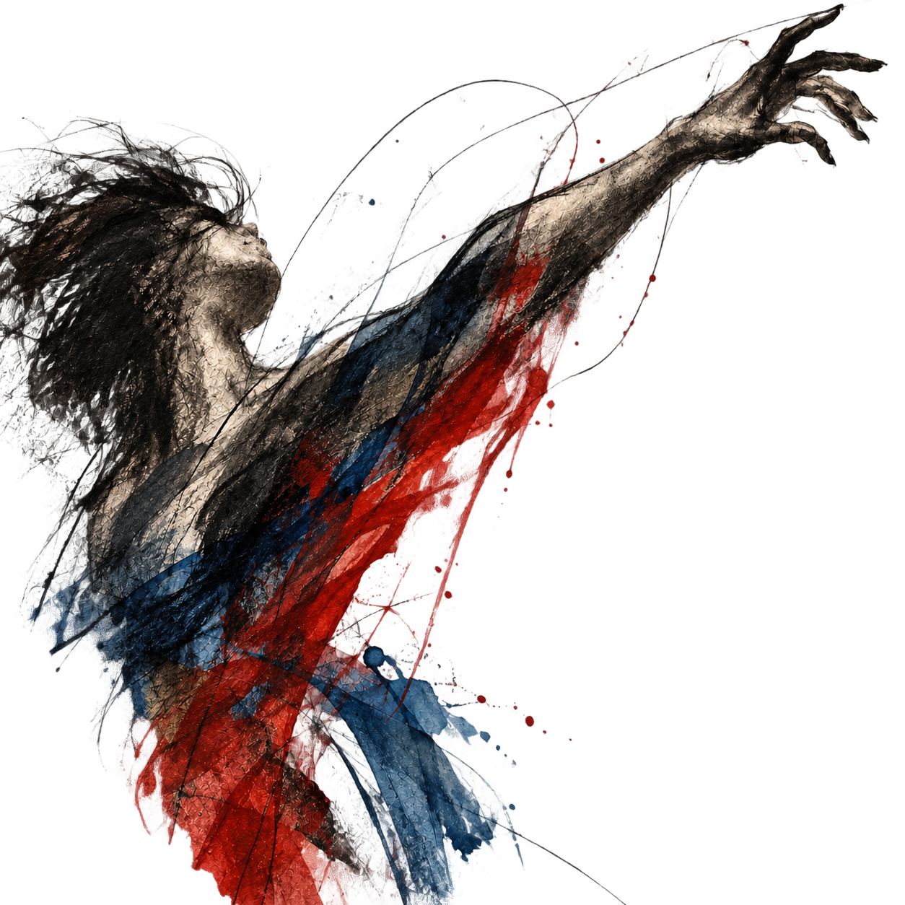

palavra
caderno / 02
Tudo pode
virar linguagem.
Uma página para reunir pistas, referências e pequenas descobertas.
abrir o laboratório ↓

02 / 04 anotar édar forma
notas soltas
Algumas coisas
querem ser vistas.
Nomear


imagem
Sugerir
Sugerir
é abrir espaço.
gesto
Mover
é dizer.
laboratório
Monte uma
pequena frase.
Escolha palavras. Veja o sentido aparecer.
ensaio aberto
toque nos fragmentos
a linguagem
começa aqui.
cor


voz
recortar / juntar / deslocar / inventar